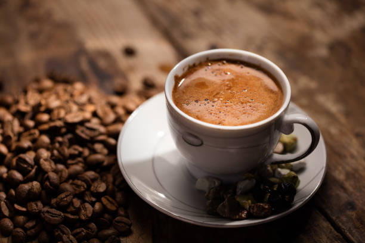

| Fiyat listesi |
|---|
| MIRRA :40tl |
| CİLVELİ KAHVE :50tl |
| SÜVARİ KAHVESİ:70tl |
| KLASİK TÜRK KAHVESİ:45TL |
Hafif kavrulmuş Türk kahvesinde 50, orta kavrulmuş kahvede 59 ve çok kavrulmuş kahvede 65 farklı tat ve koku maddesi bulunmaktadır. [14] Ayrıca hafif kavrulmuş kahvede ekşi, tatlı, meyvemsi özellikler bulunurken orta kavrulmuşta kavrulmuş, baharatımsı, odunumsu, meyvemsi ve tütünümsü özellikler, çok kavrulmuşta ise kavrulmuş, acı, baharatımsı, odunumsu ve toprağımsı tat ve koku bulunmaktadır. Bununla birlikte kakule bitkisinin çekirdeklerinin kurutulması ve öğütülmesi sonucu ortaya çıkan, Kakule tozuyla yapılan Kakuleli Türk Kahvesi gibi tadına farklı tatlar katan çeşitleri de vardır. [15] Türk Kahvesi, 2 fl oz fincan başına 50mg kafein içerir.[16]
